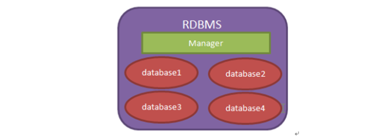
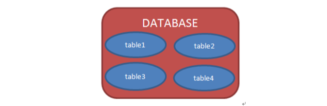
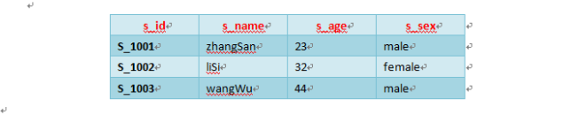
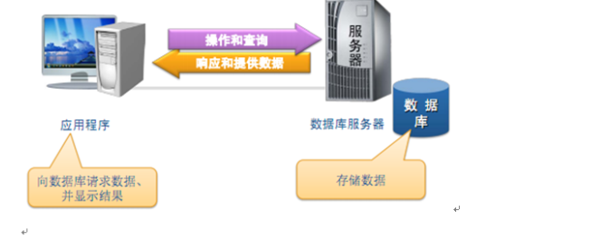

1. 数据库概述
1. 什么是数据库
- 数据库就是用来存储和管理数据的仓库！
-
数据库存储数据的优点：
-
可存储大量数据
-
方便检索
-
保持数据的一致性、完整性
-
安全，可共享
-
通过组合分析，可产生新数据。
-
2. 数据库的发展史
-
没有数据库，使用磁盘文件存储数据
-
层次结构模型数据库
-
网状结构模型数据库
-
关系结构型数据库：使用二维表格来存储数据(指表与表之间建立关系，如 MySQL)
-
关系-对象模型数据库
3. 常见数据库
-
Oracle（中文：神喻）：甲骨文(在国内注册名称)(市场占有率最高~)
-
DB2：IBM
-
SQL Server：微软(.net 用的比较多)
-
MySQL：甲骨文(被 Oracle 收购~~)
4. 理解数据库
我们现在所说的数据库泛指「关系型数据库管理系统(RDBMS)」，即「数据库服务器」。

当安装了数据库服务器后，就可以在数据库服务器中创建数据库，每个数据库中还可以包含多张表。这就是关系型数据库~

数据库表就是一个多行多列的表格。在创建表时，需要指定表的列数，以及列名称，列类型等信息。而不用指定表格的行数，行数是没有上限的。下面是 tab_sutdent 表的结构。
当把表格创建好了之后，就可以向表格中添加数据了。向表格添加数据是以行为单位的！下面是 s_student 表的记录：

大家要学会区分什么是表结构，什么是表记录。
5. 应用程序与数据库
应用程序使用数据库完成对数据的存储！

2. 安装服务器 MySQL Community Server
完整安装文档:
https://dev.mysql.com/doc/refman/8.3/en/installing.html
https://dev.mysql.com/doc/refman/8.3/en/windows-installation.html
总结注意事项:
-
只支持 Windows 64-bit 操作系统，推荐安装打包形式为 MSI 的安装程序
https://dev.mysql.com/downloads/installer/ -
还需要 Visual C++ 2019 再发布包
https://learn.microsoft.com/zh-cn/cpp/windows/latest-supported-vc-redist?view=msvc-170#visual-studio-2015-2017-2019-and-2022 -
默认安装路径
C:\Program Files\MySQL\MySQL Server 8.0 -
要以管理员权限安装
-
杀毒软件设置（关闭软件省事）
-
不要在 datadir 目录上开启病毒扫描（C:\Program Files\MySQL\MySQL Server X.Y\data）
-
不要在 tmpdir 目录上开启病毒扫描
-
-
配置服务器 :
C:\Program Files\MySQL\MySQL Server X.Y\bin\mysql-configurator.exeServer Configuration type Development
占用内存最少 (学习推荐)
Server
占用内存中等
Dedicated
占用内存最多
Manual
手工配置，默认占用内存 16M
-
Configure MySQL server as a Windows service (Selected by default.)
|
安装后会自带简单的客户端工具 mysql (登录后可以执行 SQL 语句) 后面还有功能强大的 MySQL Shell 客户端工具。 |
3. 启动 MySQL 数据库服务
Windows 下启动：
-
作为系统服务，开机自启动。
-
手工双击启动。
sudo /usr/local/mysql/support-files/mysql.server startsystemctl start mysql4. 默认客户端 mysql
- 获取帮助
-
mysql --help
- 链接数据库（确保服务在运行）
-
mysql -h host -u user -p
Enter password: 在此处输入密码，输入时没有反馈-
显示 Access denied 表示登录失败
-
显示 mysql> 表示登录成功
-
- 退出链接
-
$> quit (or \q)
- 登录报错文档
5. 下载客户端 GUI Client (图形界面)
有许多不同的数据库客户端软件可供选择，以下是一些常见的数据库客户端软件：
-
DBeaver： DBeaver 是一款功能强大的开源数据库客户端，支持多种数据库管理系统，包括 MySQL、PostgreSQL、SQLite、Oracle 等。
-
MySQL Workbench： MySQL Workbench 是 MySQL 官方提供的数据库设计和管理工具，具有图形用户界面和丰富的功能，适用于 MySQL 数据库。
-
Navicat： Navicat 是一款强大的数据库管理工具，支持多种数据库，包括 MySQL、MariaDB、PostgreSQL、SQLite 等，具有直观的用户界面和丰富的功能。
-
SQLyog： SQLyog 是一款专门针对 MySQL 的数据库管理工具，具有直观的用户界面和丰富的功能，适用于开发人员和数据库管理员。
-
HeidiSQL： HeidiSQL 是一款免费开源的 MySQL 数据库客户端软件，具有直观的用户界面和丰富的功能，适用于 Windows 平台。
-
pgAdmin： pgAdmin 是 PostgreSQL 数据库的官方管理工具，具有图形用户界面和丰富的功能，适用于 PostgreSQL 数据库的管理和开发。
-
MongoDB Compass： MongoDB Compass 是 MongoDB 数据库的官方管理工具，具有直观的用户界面和丰富的功能，适用于 MongoDB 数据库的管理和查询。
以上是一些常见的数据库客户端软件，它们提供了各种功能和特性，您可以根据自己的需要选择适合的数据库客户端软件。
6. 下载客户端 MySQL Shell(命令界面)
- 安装后运行命令
-
mysqlsh -u root -p -h yourip
6.1 链接数据库 Shell → Server
链接数据库有三种方式，参考上面链接。
-
在执行 mysqlsh 时链接数据库
mysqlsh -u username -h ip -P 3306 -p -
进入 mysqlsh 后再链接数据库
运行命令: mysqlsh MySQL JS >\connect root@localhost:3306 输入密码\connect 用户名@ip或者域名:端口 -
在 javascript 或者 python 模式下链接数据库（省略）
|
在实际开发中，会使用 MySQL 的第三方库进行开发。即使用代码链接数据库。 参考 https://www.npmjs.com/ 查找第三方库 |
6.2 进操作模式 MySQL Shell
-
Shell 对话时激活模式 (在 MySQL Shell 命令行里)
用于最初一步一步调试-
\sql
-
\js → 是默认的模式
-
\py
-
-
Shell 批处理模式激活 (在操作系统命令行里)
一个命令操作批量处理任务-
$> mysqlsh --sql < code.sql
-
$> mysqlsh --js < code.js
-
$> mysqlsh --py < code.py
-
|
6.3 交互式多行 Code
-
支持单行代码执行
-
支持多行代码执行
-
mysql-sql> \ 可以跟多行代码
-
mysql-js>\sql 在别的模式下 \sql 不能跟多行代码
-
7. 数据类型
8. MySQL 开启远程访问权限总结
8.1 链接方式 ip/socket
使用 ip 去链接 MySQL 数据库，会被拒绝，更改配置允许链接。
-
在 Linux 系统中编辑配置文件 /etc/mysql/mysql.conf.d/mysqld.cnf，打开允许 ip 链接功能。
-
在 Windows 系统中查找文件 my.ini 进行编辑。
-
在 MacOS 直接就可以使用，不用改这个配置。
bind-address = 0.0.0.0在 Linux/MacOS 重启 MySQL 服务
systermctl restart mysql| Windows 下可以在服务管理中进行重启 MySQL 服务 |
8.2 设置用户权限
-
进入 MySQL 环境
在终端输入以下命令并输入密码登录：-- mysql 命令要加 -h,否则不让登录 mysql -u root -P 3307 -h 127.0.0.1 -p -
执行权限变更 SQL
在 MySQL 提示符下依次输入：-- 进入系统库 USE mysql; -- 将 root 用户的访问限制从 localhost 改为所有 IP (%) UPDATE user SET host = '%' WHERE user = 'root' AND host = 'localhost'; -- 刷新授权表使修改立即生效 FLUSH PRIVILEGES; -- 确认修改是否成功 SELECT user, host FROM user WHERE user = 'root'; -
验证网络监听
退出 MySQL 后，在终端执行以下命令确认 MySQL 已经监听在所有网卡上（显示为*.3306）：netstat -an | grep 3306 -
注意事项
-
安全风险：开启
%后，root 用户将暴露在网络中，请务必设置强密码。 -
防火墙：若远程仍无法连接，请前往
系统设置 → 网络 → 防火墙确保相应的端口已允许传入连接。
-
9. SQL命令操作数据库案例
9.1 基本语句介绍
查询数据库版本、日期、时间
SELECT VERSION(), CURRENT_DATE, CURRENT_TIME;+-------------------------+--------------+--------------+ | version() | current_date | current_time | +-------------------------+--------------+--------------+ | 8.0.34-0ubuntu0.20.04.1 | 2024-03-28 | 10:30:28 | +-------------------------+--------------+--------------+
| sql 语句以英文分号 ; 结尾 |
SHOW WARNINGS;可以查看之前的报错信息。
9.2 数据库操作
9.2.1 SHOW DATABASES — 显示所有数据库
一个数据库服务器可以拥有多个数据库。
show databases;dayu-test information_schema mysql nuxt3_blog performance_schema red-maple__model red_maple swizer-master sys test-prisma
问题：哪些数据库是默认存在的？
在 MySQL 8 中，默认情况下会创建以下几个数据库：
-
information_schema：包含关于 MySQL 服务器内部的信息，如数据库、表和列的元数据。 -
mysql：包含 MySQL 服务器的系统和管理数据，如用户权限、访问控制和日志。 -
performance_schema：提供了有关 MySQL 服务器性能的信息，如线程活动、资源使用和事件计时。 -
sys：提供了 MySQL 服务器的性能监控和诊断功能，它是基于performance_schema和information_schema数据库的视图。
除了以上几个默认数据库外，其他数据库均需要用户手动创建。
| 不要去轻易改变 MySQL 的默认数据库，否则会造成 MySQL server 无法正常运行。 |
9.2.2 CREATE DATABASE — 创建空数据库
假设我们正在制作某个公司的官方网站，创建一个空的数据库，将其命名为 OfficialWebsite。
CREATE DATABASE OfficialWebsite;再次使用 show databases; 命令查看数据库 OfficialWebsite 已经被创建了。
- 问题: 如果已经存在 OfficialWebsite 数据库，会报什么错吗？
-
Can’t create database 'OfficialWebsite'; database exists
| 业务场景 | 推荐配置 | 说明 |
|---|---|---|
绝大多数中文互联网应用 (推荐) |
utf8mb4_0900_ai_ci |
MySQL 8.x 默认值。基于 Unicode 9.0 规范，支持 Emoji，排序准确且性能优秀，不区分大小写。 |
极致兼容老旧系统 (5.7 以前) |
utf8mb4_general_ci |
传统的简化排序方式。如果你的数据需要迁移回旧版本 MySQL 或与老系统频繁对接，可选择此项。 |
严格中文拼音/笔画排序 |
utf8mb4_zh_0900_as_cs |
区分大小写。专门针对中文定制的排序规则，支持按照拼音顺序对中文进行排序。 |
9.2.3 USE — 使用存在的数据库
选择某个数据库作为当前使用的数据库。
-
指在 MySQL Shell 中需要使用 USE
-
在实际编程代码中，会直接指定要链接的数据库。
USE OfficialWebsite;Default schema set to `OfficialWebsite`.
9.2.4 SELECT DATABASE() — 显示当前数据库
问题: 如何显示当前正在使用哪个数据库？
在 MySQL Shell 中使用命令
SELECT DATABASE();database() OfficialWebsite
| 注意要有小括号。 |
9.2.5 DROP DATABASE name — 删除数据库
问题: 如何删除指定的数据库？
在 MySQL Shell 中使用命令
drop DATABASE OfficialWebsite;Query OK, 0 rows affected (0.01 sec)
9.3 表格操作
9.3.1 SHOW TABLES — 显示所有表
显示当前数据库中的所有表
SHOW TABLES;Empty set (0.00 sec) 指没有表
9.3.2 CREATE TABLE — 创建表
创建一个内容分类表 ContentCategory，用于对网站内容进行类别区分。创建若干字段如下：
-
分类标题
title— UNIQUE 指该字段的记录是唯一 -
分类描述
description -
分类归属
owner -
是否启用
useFlag -
创建日期
createDate
CREATE TABLE ContentCategory (
id INT AUTO_INCREMENT PRIMARY KEY,
title VARCHAR(20) NOT NULL UNIQUE,
description VARCHAR(200),
owner VARCHAR(20),
useFlag CHAR(1),
createDate DATE
);Query OK, 0 rows affected (0.02 sec)
|
表存在报错
ERROR: 1050 (42S01) at line 1: Table 'ContentCategory' already exists
|
问题: 为什么下面这条语句不能执行？
CREATE TABLE ContentCategory (title VARCHAR(20), desc VARCHAR(100));
ERROR: 1064 (42000) at line 1: You have an error in your SQL syntax; check the manual that corresponds to your MySQL server version for the right syntax to use near 'desc VARCHAR(100))' at line 1
报错原因
提供创建表的 SQL 语句大部分是正确的。但是，“desc”是 SQL 中的一个保留关键字，表示降序排序，最好避免将保留关键字用作标识符（如列名），以防止潜在的冲突。
如果你需要将 “desc” 作为列名使用，可以通过用反引号（对于 MySQL）或双引号（对于某些其他数据库系统）将其括起来来实现，如下所示：
CREATE TABLE ContentCategory (title VARCHAR(20), `desc` VARCHAR(20));通过在 desc 周围使用反引号，你告诉数据库系统将其视为标识符而不是保留关键字。
9.3.3 DESCRIBE — 显示表结构
显示表的所有字段定义
DESCRIBE ContentCategory;+-------------+--------------+------+-----+---------+-------+ | Field | Type | Null | Key | Default | Extra | +-------------+--------------+------+-----+---------+-------+ | title | varchar(20) | YES | | NULL | | | description | varchar(200) | YES | | NULL | | | owner | varchar(20) | YES | | NULL | | | useFlag | char(1) | YES | | NULL | | | createDate | date | YES | | NULL | | +-------------+--------------+------+-----+---------+-------+ 5 rows in set (0.00 sec)
|
9.3.4 ALTER 更改表名称
RENAME TABLE old_table TO new_table;
ALTER TABLE old_table RENAME new_table;| 实际操作省略 |
9.3.5 ALTER 更改表增加字段 ADD COLUMN — 常用
添加自增字段 id 到 ContentCategory 表，并设置为第一列。
ALTER TABLE ContentCategory
ADD COLUMN id INT AUTO_INCREMENT PRIMARY KEY FIRST;重新设置自增 id 数字，如想从 10 开始设置。
SET @row_number = 10;
UPDATE ContentCategory SET id = @row_number := @row_number + 1;9.3.6 ALTER 更改表字段位置 MODIFY COLUMN
如果你想要修改表中字段的位置，你需要使用 ALTER TABLE 语句，并且在该语句中重新定义表的结构，包括字段的顺序。以下是一个示例：
假设对于 ContentCategory 的表，想把字段 id 移动到第一列，可以这样做：
ALTER TABLE ContentCategory
MODIFY COLUMN id INT AUTO_INCREMENT PRIMARY KEY FIRST,
MODIFY COLUMN other_column_name data_type AFTER id;在上面的语句中，MODIFY COLUMN 关键字用于指定要修改的列，AFTER 关键字用于指定在哪个字段之后插入当前字段。在这个例子中，id 字段被移到了第一列，然后是其他的字段。
请注意，修改表结构可能会影响到已有的数据和相关的索引，所以在执行此类操作之前，请务必备份数据，并确保对表结构的修改不会破坏已有的应用程序逻辑。
举例将 useFlag 移到 description 后面
ALTER TABLE ContentCategory
MODIFY COLUMN useFlag CHAR(1) AFTER description;9.3.7 ALTER 生成列（Generated Column）-- 含删除列演示
-
创建包含生成列的表
运行命令CREATE TABLE t1 ( c1 INT, c2 INT GENERATED ALWAYS AS (c1 + 1) STORED);创建名为
t1的表，包含两个列：-
c1：普通整数列 -
c2：存储型生成列，值由c1 + 1自动计算得出并持久化存储
-
-
插入数据（观察生成列效果）
运行命令INSERT INTO t1 (c1) VALUES (7);插入记录时只需指定普通列
c1，生成列c2会自动计算：-
c1= 7 -
c2= 8（自动计算：7 + 1）插入时必须排除生成列，只需为
c1提供值。
-
-
修改生成列名称（c2 → c3）
运行命令ALTER TABLE t1 CHANGE c2 c3 INT GENERATED ALWAYS AS (c1 + 1) STORED;使用
CHANGE关键字修改列名和定义：-
将
c2重命名为c3 -
保持生成规则不变：
(c1 + 1) STORED
-
-
删除生成列
运行命令ALTER TABLE t1 DROP COLUMN c3;使用
DROP COLUMN删除c3列。 -
参考文档
9.3.9 DROP 删除表
DROP TABLE ContentCategory;9.4 记录操作
9.4.1 LOAD DATA LOCAL INFILE — 批量导入数据 — 了解
一般用于数据的初始化，这种方式比较麻烦，因为有一些条件：
-
数据以 tabs 分隔
-
以字段顺序传入
-
用 \N 代替 NULL
-
不同操作系统换行符不同
-
开启本地文件能力功能
https://dev.mysql.com/doc/refman/8.3/en/load-data-local-security.html
| 了解此方式即可，知道有这样的功能就行。 |
9.4.2 INSERT INTO — 按位置插入记录
用于在表格中插入一条记录。字段位置与字段内容必须一一对应，包括自增的 id 字段。
| 可以更改字段内容的顺序，测试字段位置与字段内容不同报错的现象。 |
INSERT INTO ContentCategory VALUES (
100,
'解决方案',
'为企业提供数字孪生、3D可视化、三维建模和数据大屏技术的解决方案',
'Swot',
'Y',
'2024-02-01');
INSERT INTO ContentCategory VALUES (
101,
'成功案例',
'众多企业数字化、数字孪生、3D可视化、三维建模和数据大屏的成功案例',
'River',
'N',
'2024-03-01');
INSERT INTO ContentCategory VALUES (
102,
'模型资源',
'拥有精美丰富的3D模型资源，高度覆盖各种行业需求。',
'River',
'Y',
'2024-01-01');Query OK, 1 row affected (0.00 sec)
问题: 每次都需要指定 id，用于简单测试时可以，但是实际情况下需要数据库自动递增 id 怎么办 ？
答：参考下面指定字段名的方式来插入记录。
9.4.3 INSERT INTO — 按字段插入记录
使用字段与位置对应的方式插入记录，这样表中的 id 就会自增长。
INSERT INTO ContentCategory (title, description, useFlag, owner, createDate)
VALUES (
'解决方案',
'为企业提供数字孪生、3D可视化、三维建模和数据大屏技术的解决方案',
'Y',
'Swot',
'2024-02-01');
INSERT INTO ContentCategory (title, description, useFlag, owner, createDate)
VALUES (
'成功案例',
'众多企业数字化、数字孪生、3D可视化、三维建模和数据大屏的成功案例',
'N',
'River',
'2024-03-01');
INSERT INTO ContentCategory (title, description, useFlag, owner, createDate)
VALUES (
'模型资源',
'拥有精美丰富的3D模型资源，高度覆盖各种行业需求。',
'Y',
'River',
'2024-01-01');说明：
-
在表名后给出要插入的列名，其他没有指定的列等同于插入 null 值。一次插入一行
-
在 values 后给出列值，值的顺序和个数必须与前面指定的列对应
9.4.4 SELECT FROM WHERE — 获取记录语法说明
语法格式：
SELECT what_to_select FROM which_table WHERE conditions_to_satisfy;
语法解释：
- what_to_select 想要看见的内容
-
indicates what you want to see. This can be a list of columns, or * to indicate “all columns.”
*表示所有列 - which_table 哪个表
-
indicates the table from which you want to retrieve data.
表明数据从哪个表里获取。 - conditions_to_satisfy 满足的条件
-
The WHERE clause is optional. If it is present, conditions_to_satisfy specifies one or more conditions that rows must satisfy to qualify for retrieval.
WHERE 是可选的。如果存在，行数据必须满足这个条件才能取出来。
9.4.5 SELECT * FROM — 获取所有列
SELECT * FROM ContentCategory;+----------+------------------------------------------------------------------+ | title | description | +----------+------------------------------------------------------------------+ | 解决方案 | 为企业提供数字孪生、3D可视化、三维建模和数据大屏技术的解决方案 | | 成功案例 | 众多企业数字化、数字孪生、3D可视化、三维建模和数据大屏的成功案例 | +----------+------------------------------------------------------------------+
在 MySQL 中，* 是一个通配符，用于表示选择所有列(All Columns)。
|
隐藏列无法被选择
There is an exception to the principle that SELECT * selects all columns. |
9.4.6 SELECT * FROM WHERE — 条件选择
选择特定条件的行
SELECT * FROM ContentCategory WHERE title = '解决方案';+----------+------------------------------+ | title | description | +----------+------------------------------+ | 解决方案 | 为企业提供数字孪生的解决方案 | +----------+------------------------------+
SELECT * FROM ContentCategory WHERE createDate >= '2024-02-01';+----------+---------------------------------------------------+---------+------------+ | title | description | useFlag | createDate | +----------+---------------------------------------------------+---------+------------+ | 成功案例 | 众多企业数字化、数字孪生、3D可视化、三维建模和数据大屏的成功案例 | N | 2024-03-01 | +----------+---------------------------------------------------+---------+------------+
| 在实际开发中，如果数据量比较大，就不要一次性把 所有行 的数据都取出来。应该使用条件选择，来实现分页或者过滤功能。 |
9.4.7 SELECT * FROM WHERE AND/OR — 条件选择
SELECT * FROM ContentCategory WHERE useFlag='Y' AND createDate >= '2024-01-01';+----------+---------------------------------------------------+---------+------------+ | title | description | useFlag | createDate | +----------+---------------------------------------------------+---------+------------+ | 成功案例 | 众多企业数字化、数字孪生、3D可视化、三维建模和数据大屏的成功案例 | N | 2024-03-01 | +----------+---------------------------------------------------+---------+------------+
SELECT * FROM ContentCategory WHERE useFlag='N' OR createDate <= '2024-01-31';+----------+---------------------------------------------------+---------+------------+ | title | description | useFlag | createDate | +----------+---------------------------------------------------+---------+------------+ | 成功案例 | 众多企业数字化、数字孪生、3D可视化、三维建模和数据大屏的成功案例 | N | 2024-03-01 | +----------+---------------------------------------------------+---------+------------+
| AND 和 OR 混用时，记得加小括号。案例省略。 |
9.4.8 SELECT column FROM — 选择指定列
选择指定的列进行显示，列名之间用逗号分隔。
SELECT title, description FROM ContentCategory;+----------+------------------------------------------------------------------+ | 解决方案 | 为企业提供数字孪生、3D可视化、三维建模和数据大屏技术的解决方案 | | 成功案例 | 众多企业数字化、数字孪生、3D可视化、三维建模和数据大屏的成功案例 | +----------+------------------------------------------------------------------+
-- 会显示所有 owner
SELECT owner FROM ContentCategory;
-- 只显示不同的 owner
SELECT DISTINCT owner FROM ContentCategory;+-------+ | owner | +-------+ | Swot | | River | +-------+
| DISTINCT 排除 owner 列相同的记录。 |
|
You can use a WHERE clause to combine row selection with column selection. 案例省略 |
9.4.9 SELECT FROM ORDER BY — 排序 重要内容!
对行进行排序
SELECT title, description, createDate
FROM ContentCategory ORDER BY createDate;+----------+-------------------------------------------------------+------------+ | title | description | createDate | +----------+-------------------------------------------------------+------------+ | 模型资源 | 拥有精美丰富的3D模型资源，高度覆盖各种行业需求。 | 2024-01-01 | | 解决方案 | 为企业提供数字孪生、3D可视化、三维建模和数据大屏技术的解决方案 | 2024-02-01 | | 成功案例 | 众多企业数字化、数字孪生、3D可视化、三维建模和数据大屏的成功案例 | 2024-03-01 | +----------+-------------------------------------------------------+------------+
| 默认 ORDER BY 对于字符是不区分大小写的，区分大小写时用 ORDER BY BINARY YourColumnName; |
默认排序为升序 ASC，降序使用 DESC
SELECT title, description, createDate
FROM ContentCategory ORDER BY createDate DESC;多列分别排序
SELECT title, useFlag, createDate
FROM ContentCategory ORDER BY useFlag, createDate DESC;9.4.10 SELECT * FROM LIMIT — 分页 重要内容!
LIMIT 子句常用于计算分页。在网页中的分页设计中，通常浏览器传递两个参数来控制分页：
-
页码（Page Number）：表示当前所在的页码。
-
每页显示数量（Page Size）：表示每页显示的记录数。
在 SQL 查询中，通过 LIMIT 子句来实现分页。
LIMIT 子句包括两个参数，分别是起始位置和要返回的行数。
通常，起始位置可以通过计算 `(页码 - 1) * 每页显示数量`得到，而要返回的行数即为每页显示数量。
因此，在网页中的分页设计中，你可以计算出起始位置和每页显示数量，然后将其应用到SQL 查询中。
例如，如果你希望显示第 3 页，每页显示 10 条记录，那么起始位置为 (3 - 1) * 10 = 20，要返回的行数为
10，你可以构造如下的 SQL 查询：
SELECT * FROM ContentCategory LIMIT 20, 10;这将返回从第 21 行开始的 10 条记录，即第 3 页的内容。
| 如果想做测试，请加入更多的测试记录。 |
9.4.11 SELECT UNION ALL SELECT — 不去除重复行 了解内容
9.4.11.1 create 2 tables
假设我们有两个表格，一个是记录学生选修的数学课程的表格 MathCourses，另一个是记录学生选修的英语课程的表格 EnglishCourses。
下面是创建 MathCourses 和 EnglishCourses 表格的 SQL 语句示例：
-- 创建 MathCourses 表格
CREATE TABLE MathCourses (
student VARCHAR(50),
math_grade VARCHAR(2)
);
-- 创建 EnglishCourses 表格
CREATE TABLE EnglishCourses (
student VARCHAR(50),
english_grade VARCHAR(2)
);使用以上 SQL 语句，您可以创建两个表格，分别用于存储学生选修的数学课程和英语课程的信息。
实际在设计数据库时，不会这样设计结构。因为设计这样的两个表明显不合理，冗余了。这里只是为了演示 UNION ALL。
|
9.4.11.2 insert data
以下是向 MathCourses 和 EnglishCourses 表格分别插入示例数据的 SQL 语句：
-- 向 MathCourses 表格插入示例数据
INSERT INTO MathCourses (student, math_grade) VALUES
('Alice', 'A'),
('Bob', 'B'),
('Charlie', 'C');
-- 向 EnglishCourses 表格插入示例数据
INSERT INTO EnglishCourses (student, english_grade) VALUES
('Alice', 'B'),
('Bob', 'A'),
('Charlie', 'C');使用以上 SQL 语句，您可以将示例数据插入到 MathCourses 和 EnglishCourses 表格中。
9.4.11.3 select * from …
以下是分别读取 MathCourses 和 EnglishCourses 表格所有记录的 SQL 查询语句：
-- 读取 MathCourses 表格所有记录
SELECT * FROM MathCourses;
-- 读取 EnglishCourses 表格所有记录
SELECT * FROM EnglishCourses;MathCourses 表格包含以下数据+---------+---------------------+
| student | math_grade |
+---------+---------------------+
| Alice | A |
| Bob | B |
| Charlie | C |
+---------+---------------------+EnglishCourses 表格包含以下数据+---------+---------------------+
| student | english_grade |
+---------+---------------------+
| Alice | B |
| Bob | A |
| Charlie | C |
+---------+---------------------+9.4.11.4 union all
UNION ALL 操作符。
SELECT student, math_grade, NULL AS english_grade
FROM MathCourses
UNION ALL
SELECT student, NULL, english_grade
FROM EnglishCourses;执行以上查询将得到以下结果：
+---------+------------+---------------+
| student | math_grade | english_grade |
+---------+------------+---------------+
| Alice | A | NULL |
| Bob | B | NULL |
| Charlie | C | NULL |
| Alice | NULL | B |
| Bob | NULL | A |
| Charlie | NULL | C |
+---------+------------+---------------+这样，我们就将两个表格的数据合并成了一个结果集，并且保留了每个表格的数据行之间的关系。
9.4.12 计算日期
9.4.12.1 计算时间长度
计算内容分类表中记录创建多长时间了，使用 TIMESTAMPDIFF() 函数。
SELECT title,
createDate,
CURDATE(),
TIMESTAMPDIFF(DAY, createDate, CURDATE()) AS duration
FROM ContentCategory
ORDER BY duration;+----------+------------+------------+----------+ | title | createDate | CURDATE() | duration | +----------+------------+------------+----------+ | 成功案例 | 2024-03-01 | 2024-03-30 | 29 | | 成功案例 | 2024-03-01 | 2024-03-30 | 29 | | 解决方案 | 2024-02-01 | 2024-03-30 | 58 | | 解决方案 | 2024-02-01 | 2024-03-30 | 58 | | 模型资源 | 2024-01-01 | 2024-03-30 | 89 | | 模型资源 | 2024-01-01 | 2024-03-30 | 89 | +----------+------------+------------+----------+
9.4.12.2 判断时间值为 NULL
排除 createDate 是 NULL 的行
SELECT title,
createDate,
CURDATE(),
TIMESTAMPDIFF(DAY, createDate, CURDATE()) AS duration
FROM ContentCategory
WHERE createDate IS NOT NULL
ORDER BY duration;问题: 为什么使用 IS NOT NULL？
The query uses createDate IS NOT NULL rather than createDate <> NULL because NULL is a special value that cannot be compared using the usual comparison operators. This is discussed later. See [Section 5.3.4.6, “Working with NULL Values”](https://dev.mysql.com/doc/refman/8.3/en/working-with-null.html).
9.4.12.3 抽取月份值
抽取月份 MONTH()
SELECT title, createDate, MONTH(createDate) FROM ContentCategory;+----------+------------+-------------------+ | title | createDate | MONTH(createDate) | +----------+------------+-------------------+ | 解决方案 | 2024-02-01 | 2 | | 成功案例 | 2024-03-01 | 3 | | 模型资源 | 2024-01-01 | 1 | | 解决方案 | 2024-02-01 | 2 | +----------+------------+-------------------+
9.4.12.4 抽取下个月的记录
前置知识: MySQL Shell 中如何执行函数？
-- 常用方法
SELECT MONTH(DATE_ADD(CURDATE(), INTERVAL 1 MONTH));
-- 不好理解，用的少
SELECT MOD(MONTH(CURDATE()), 12) + 1;可以先查看上面函数执行的结果为：
+----------------------------------------------+ | MONTH(DATE_ADD(CURDATE(), INTERVAL 1 MONTH)) | +----------------------------------------------+ | 4 | +----------------------------------------------+
+-------------------------------+ | MOD(MONTH(CURDATE()), 12) + 1 | +-------------------------------+ | 4 | +-------------------------------+
抽取 createDate 中月份为下个月的记录（实际上经常用来计算生日）
方法1:
SELECT title, createDate FROM ContentCategory
WHERE MONTH(createDate) = MONTH(DATE_ADD(CURDATE(), INTERVAL 1 MONTH));+----------+------------+ | title | createDate | +----------+------------+ | 解决方案 | 2024-04-01 | +----------+------------+
| 日期取自系统时间。 |
方法2:
SELECT title, createDate FROM ContentCategory
WHERE MONTH(createDate) = MOD(MONTH(CURDATE()), 12) + 1;+----------+------------+ | title | createDate | +----------+------------+ | 解决方案 | 2024-04-01 | +----------+------------+
| 日期取自系统时间。 |
9.4.12.4.1 MOD 函数解释
代码的目的是计算下一个月份，无论当前的月份是多少，它都会返回当前月份的下一个月。
SELECT MOD(MONTH(CURDATE()), 12) + 1;-
MONTH(CURDATE())：-
CURDATE()返回当前的日期，例如2024-09-03。 -
MONTH(CURDATE())从当前日期中提取月份部分。在这个例子中，它会返回9（表示 9 月）。
-
-
MOD(MONTH(CURDATE()), 12)：-
MOD(x, y)函数计算x除以y的余数。 -
MOD(MONTH(CURDATE()), 12)将月份（例如 9 月）对 12 取模，因此MOD(9, 12)结果是9，因为 9 小于 12。 -
对于 12 月来说，
MOD(12, 12)的结果是0，这将帮助我们将月份计算回 1 月。
-
-
+ 1：-
最后一步加
1，目的是得到下一个月份-
例如
MOD(9, 12) + 1 = 10，即当前是 9 月，下一月是 10 月。 -
对于 12 月的情况，
MOD(12, 12) + 1 = 1，即从 12 月循环回到 1 月。
-
-
结果： - 如果当前是 9 月，这个查询会返回 10。 - 如果当前是 12 月，这个查询会返回 1。
总结：这段 SQL 代码是用来计算当前月份的下一个月，并且在 12 月后返回 1 月。
9.4.13 NULL 值处理
SELECT 1 IS NULL, 1 IS NOT NULL;+-----------+---------------+ | 1 IS NULL | 1 IS NOT NULL | +-----------+---------------+ | 0 | 1 | +-----------+---------------+
问题: 可以使用 =, <, <> 来测试 NULL 吗？
不可以！ 因为和 NULL 的算术比较结果都是 NULL，得不到有意义的结果。例子如下：
SELECT 1 = NULL, 1 <> NULL, 1 < NULL, 1 > NULL;+----------+-----------+----------+----------+ | 1 = NULL | 1 <> NULL | 1 < NULL | 1 > NULL | +----------+-----------+----------+----------+ | NULL | NULL | NULL | NULL | +----------+-----------+----------+----------+
9.4.14 MySQL 自带模式匹配语法 Pattern Matching
模式匹配语法
-
默认不区分大小写
-
使用
LIKE（不要使用 =）后面跟匹配模式字符串 -
使用
NOT LIKE（不要使用 <>）后面跟匹配模式字符串 -
_匹配任意单个字符 -
%匹配任意数量的字符（包括 0 个字符）
9.4.14.1 举例查找 owner 字段以 S 开头的任意记录
SELECT title, owner FROM ContentCategory
WHERE owner LIKE 'S%';+----------+-------+ | title | owner | +----------+-------+ | 解决方案 | Swot | | 一级分类 | Swot | +----------+-------+
| 第一个字符 S，后面可以为任意数量的字符。 |
9.4.14.2 举例查找 owner 字段以 S 开头的记录 — 区分大小写
-
默认情况下，MySQL 的
LIKE操作不区分大小写。 -
使用
COLLATE utf8mb4_0900_as_cs可以启用区分大小写匹配。 -
utf8mb4_bin也区分大小写，但更严格（按二进制值比较）。
示例查询
SELECT title, owner
FROM ContentCategory
WHERE owner COLLATE utf8mb4_0900_as_cs LIKE 'S%';查询结果
| title | owner |
|---|---|
解决方案 |
Swot |
一级分类 |
Swot |
对比说明
| LIKE 写法 | 匹配结果 |
|---|---|
|
只匹配 |
|
只匹配 |
如果去掉 COLLATE 或使用 utf8mb4_general_ci（默认，ci 表示
case-insensitive），则 'S%' 和 's%' 结果相同，都不区分大小写。
|
快速记忆
-
_cs= case-sensitive（区分大小写） -
_ci= case-insensitive（不区分大小写） -
_bin= 二进制比较（也区分，但更严格）
9.4.14.3 举例查找 owner 字段以 ver 结尾的记录
SELECT title, owner FROM ContentCategory
WHERE owner LIKE '%ver';+----------+-------+ | title | owner | +----------+-------+ | 成功案例 | River | | 模型资源 | River | +----------+-------+
9.4.14.4 举例查找 owner 字段含 w 字符的记录
SELECT title, owner FROM ContentCategory
WHERE owner LIKE '%w%';+----------+-------+ | title | owner | +----------+-------+ | 解决方案 | Swot | | 一级分类 | Swot | +----------+-------+
9.4.14.5 举例查找 owner 字段是 5 个字符的记录
sSELECT title, owner FROM ContentCategory
WHERE owner LIKE '_____';+----------+-------+ | title | owner | +----------+-------+ | 成功案例 | River | | 模型资源 | River | +----------+-------+
_ 原始字符的使用，需要转义。
SELECT title, owner from ContentCategory WHERE owner LIKE '\_\_\_\_\_';+----------+-------+ | title | owner | +----------+-------+ | 解决方案 | _____ | +----------+-------+
9.4.15 MySQL 扩展正则表达式语法 Regular Expression 个人最喜欢模式
正则表达式是一种用于匹配和操作文本的强大工具，它是由一系列字符和特殊字符组成的模式，用于描述要匹配的文本模式。
正则表达式可以在文本中查找、替换、提取和验证特定的模式。
MySQL 中有三种使用正则表达式的形式：
-
REGEXP_LIKE()
-
REGEXP 操作符
-
RLIKE 操作符
9.4.15.1 举例查找 owner 字段以 S 开头的记录
SELECT title, owner FROM ContentCategory
WHERE REGEXP_LIKE(owner, '^S');+----------+-------+ | title | owner | +----------+-------+ | 解决方案 | Swot | | 解决方案 | Swot | +----------+-------+
9.4.15.2 举例查找 owner 字段以 S 开头的记录 — 区分大小写
以下两条语句都支持区分大小写。
SELECT title, owner FROM ContentCategory
WHERE REGEXP_LIKE(owner, '^s' COLLATE utf8mb4_0900_as_cs);
SELECT title, owner FROM ContentCategory
WHERE REGEXP_LIKE(owner, '^s', 'c');无内容
9.4.15.3 举例查找 owner 字段以 ver 结尾的记录
SELECT title, owner FROM ContentCategory
WHERE REGEXP_LIKE(owner, 'ver$');+----------+-------+ | title | owner | +----------+-------+ | 成功案例 | River | | 模型资源 | River | +----------+-------+
9.4.15.4 举例查找 owner 字段含 w 字符的记录
SELECT title, owner FROM ContentCategory
WHERE REGEXP_LIKE(owner, 'w');+----------+-------+ | title | owner | +----------+-------+ | 解决方案 | Swot | | 解决方案 | Swot | +----------+-------+
9.4.15.5 举例查找 owner 字段是 5 个字符的记录
以下两条语句都可以实现。
SELECT title, owner FROM ContentCategory
WHERE REGEXP_LIKE(owner, '^.....$');
SELECT title, owner FROM ContentCategory
WHERE REGEXP_LIKE(owner, '^.{5}$');+----------+-------+ | title | owner | +----------+-------+ | 成功案例 | River | | 模型资源 | River | +----------+-------+
9.4.16 计算行 Counting Rows
COUNT(*) 的使用
SELECT COUNT(*) FROM ContentCategory;+----------+ | COUNT(*) | +----------+ | 8 | +----------+
SELECT owner, COUNT(*) FROM ContentCategory GROUP BY owner;+-------+----------+ | owner | COUNT(*) | +-------+----------+ | Swot | 4 | | River | 4 | +-------+----------+
| 可以使用多种组合来查询数据。 |
9.4.17 多表操作: 两个表 INNER JOIN
有了内容分类 ContentCategory 表之后，就可以在每一篇要发布的内容信息中使用了， 我们可以定义表 ContentInfo 来保存所有要发布的内容信息。字段如下：
| 字段名 | 说明 |
|---|---|
id |
自增 id |
category |
内容分类 |
title |
标题 |
description |
描述 |
publish_date |
发布日期 |
author |
作者 |
view_count |
浏览量 |
content |
详细内容 |
del |
是否删除 |
| 需要先增加一些 ContentInfo 记录 |
9.4.17.1 CREATE TABLE ContentInfo
CREATE TABLE ContentInfo (
id INT AUTO_INCREMENT PRIMARY KEY,
category VARCHAR(20),
title VARCHAR(50),
description VARCHAR(200),
publish_date DATETIME,
author VARCHAR(20),
view_count INT,
content LONGTEXT,
del BOOLEAN);问题: 在 MySQL 中，布尔类型的字段可以接受哪些值？
答：可以接受以下三种值：
-
0 或 1：分别表示 FALSE 和 TRUE。
-
字符串：字符串 '0' 或 '1' 也可以表示 FALSE 或 TRUE。
-
TRUE 或 FALSE：MySQL 也允许使用 TRUE 或 FALSE 关键字直接赋值。
| 在 MySQL 中，TRUE 和 FALSE 关键字不要求必须大写，MySQL 对关键字是大小写不敏感的。 |
9.4.17.2 INSERT INTO ContentInfo
INSERT INTO ContentInfo (
category, title, description, publish_date,
author, view_count, content, del)
VALUES (
'解决方案',
'红枫视觉：利用数字孪生技术开创智慧园区新篇章',
'红枫视觉数字孪生可视化平台通过建立实体园区与数字模型之间的双向映射关系，实现了对园区的实时、精准监控。管理者可以通过平台，对园区的运营状态进行全面了解，掌握各项数据指标，进而做出科学决策。',
'2023-10-27 20:18:04',
'红枫视觉新闻中心',
0,
'abc',
FALSE);
INSERT INTO ContentInfo (
category, title, description, publish_date,
author, view_count, content, del)
VALUES (
'成功案例',
'数据科技园',
'科技园智慧园区可视化系统是一种利用先进的物联网技术、云计算技术和大数据技术，对园区内的各项数据进行实时监测、分析和展示的综合解决方案。该系统旨在提高园区的智能化水平和运营效率，为科技园区的管理者提供更加直观、便捷的管理工具。',
'2023-08-25 14:00:31',
'红枫视觉新闻中心',
0,
'def',
1);
INSERT INTO ContentInfo (
category, title, description, publish_date,
author, view_count, content, del)
VALUES (
'模型资源',
'建筑｜房间',
'房间通常是指一个建筑内部的一个独立空间，用于居住、工作、学习或存储物品等。根据不同的用途和功能，房间可以有不同的类型和配置。',
'2023-08-25 14:01:04',
'红枫视觉新闻中心',
0,
'xyz',
"0");9.4.17.3 两个表 INNER JOIN
SELECT category,
ContentInfo.title,
publish_date,
TIMESTAMPDIFF(DAY, publish_date, CURDATE()) as days,
view_count,
del,
ContentCategory.useFlag
FROM ContentInfo INNER JOIN ContentCategory
ON ContentInfo.category = ContentCategory.title;+----------+---------------------------+---------------------+------+------------+-----+---------+ | category | title | publish_date | days | view_count | del | useFlag | +----------+---------------------------+---------------------+------+------------+-----+---------+ | 解决方案 | 红枫视觉：利用数字孪生技术 | 2023-10-27 20:18:04 | 154 | 0 | 0 | Y | | 成功案例 | 数据科技园 | 2023-08-25 14:00:31 | 217 | 0 | 1 | N | | 模型资源 | 建筑｜房间 | 2023-08-25 14:01:04 | 217 | 0 | 0 | Y | +----------+---------------------------+---------------------+------+------------+-----+---------+
9.4.18 多表操作: 单个表 INNER JOIN
9.4.18.1 ADD COLUMN parent_id
- 需求
-
内容分类要求实现多级分类，用一个表来设计实现。所以我们需要对内容分类表 ContentCategory 做些更改。如下增加一个 parent_id 字段，用于表示当前内容分类记录的父 id。
-
parent_id = NULL 表示一级分类
-
ALTER TABLE ContentCategory
ADD COLUMN parent_id INT AFTER id;
DESCRIBE ContentCategory;+-------------+--------------+------+-----+---------+----------------+ | Field | Type | Null | Key | Default | Extra | +-------------+--------------+------+-----+---------+----------------+ | id | int | NO | PRI | NULL | auto_increment | | parent_id | int | YES | | NULL | | | title | varchar(20) | YES | | NULL | | | description | varchar(200) | YES | | NULL | | | useFlag | char(1) | YES | | NULL | | | owner | varchar(20) | YES | | NULL | | | createDate | date | YES | | NULL | | +-------------+--------------+------+-----+---------+----------------+
通过 parent_id 可以实现多级内容分类的设计，参看下面的 INSERT INTO 操作。
|
9.4.18.2 INSERT INTO ContentCategory — level 1
插入一级内容分类测试数据。
INSERT INTO ContentCategory (
parent_id, title, description,
useFlag, owner, createDate)
VALUES (
NULL,
'一级分类',
'一级分类简介',
'Y',
'Swot',
'2024-05-01');+----+-----------+----------+--------------+---------+-------+------------+ | id | parent_id | title | description | useFlag | owner | createDate | +----+-----------+----------+--------------+---------+-------+------------+ | 21 | NULL | 一级分类 | 一级分类简介 | Y | Swot | 2024-05-01 | +----+-----------+----------+--------------+---------+-------+------------+
| parent_id 为 NULL 表示一级分类，因为它没有父分类了。 |
9.4.18.3 INSERT INTO ContentCategory — level 2
插入二级内容分类测试数据。
INSERT INTO ContentCategory (
parent_id, title, description,
useFlag, owner, createDate)
VALUES (
26,
'二级分类B1',
'二级分类B1简介',
'Y',
'Swot',
'2024-05-10');
INSERT INTO ContentCategory (
parent_id, title, description,
useFlag, owner, createDate)
VALUES (
26,
'二级分类B2',
'二级分类B2简介',
'Y',
'Swot',
'2024-05-11');| 注意 parent_id 的值为父分类的 id |
9.4.18.4 INSERT INTO ContentCategory — level 3
插入三级内容分类测试数据。
INSERT INTO ContentCategory (
parent_id, title, description,
useFlag, owner, createDate)
VALUES (
27,
'三级分类',
'三级分类简介',
'Y',
'Swot',
'2024-05-18');| 注意 parent_id 的值为父分类的 id |
9.4.18.5 单个表 INNER JOIN 选择所有子分类的分层数据
SELECT c1.id, c1.title, c2.parent_id, c2.id, c2.title
From ContentCategory AS c1 INNER JOIN ContentCategory AS c2
ON c2.parent_id = c1.id
AND c1.useFlag = 'Y'
AND c2.useFlag = 'Y'+----+-----------+----+-----------+-----------+ | id | title | id | title | parent_id | +----+-----------+----+-----------+-----------+ | 26 | 一级分类 | 28 | 二级分类B1 | 26 | | 26 | 一级分类 | 27 | 二级分类B2 | 26 | | 27 | 二级分类B1 | 29 | 三级分类 | 27 | +----+-----------+----+-----------+-----------+
9.4.18.6 单个表 INNER JOIN 选择某个分类的所有子分类
SELECT c1.id, c1.title, c2.id, c2.title, c2.parent_id
From ContentCategory AS c1 INNER JOIN ContentCategory AS c2
ON c2.parent_id = c1.id
AND c1.useFlag = 'Y'
AND c2.useFlag = 'Y'
WHERE c1.id = 26;+----+----------+----+-----------+-----------+ | id | title | id | title | parent_id | +----+----------+----+-----------+-----------+ | 26 | 一级分类 | 27 | 二级分类B | 26 | | 26 | 一级分类 | 28 | 二级分类B | 26 | +----+----------+----+-----------+-----------+
9.4.18.7 单个表 INNER JOIN 选择某个分类的所有后代分类 — 了解即可(也可以使用编程语言的递归来实现)
WITH RECURSIVE CategoryCTE AS (
SELECT id, title, parent_id
FROM ContentCategory
WHERE id = 26
UNION ALL
SELECT cc.id, cc.title, cc.parent_id
FROM ContentCategory cc
INNER JOIN CategoryCTE cte ON cc.parent_id = cte.id
)
SELECT * FROM CategoryCTE;+----+-----------+-----------+ | id | title | parent_id | +----+-----------+-----------+ | 26 | 一级分类 | NULL | | 27 | 二级分类B | 26 | | 28 | 二级分类B | 26 | | 29 | 三级分类 | 27 | +----+-----------+-----------+
SQL 说明：
要选择某个分类的所有后代分类，你可以使用递归查询或者使用递归公用表表达式（CTE）来实现。但是，在 MySQL 中，没有内置的递归查询功能。但你可以通过编写存储过程或应用程序逻辑来实现递归查询。
以下是一个使用递归公用表表达式（CTE）的示例，假设你的表结构中包含一个 parent_id 字段来表示父分类的ID：
WITH RECURSIVE CategoryCTE AS (
SELECT id, title, parent_id
FROM ContentCategory
WHERE id = 21 -- 起始分类的ID
UNION ALL
SELECT cc.id, cc.title, cc.parent_id
FROM ContentCategory cc
INNER JOIN CategoryCTE cte ON cc.parent_id = cte.id
)
SELECT * FROM CategoryCTE;这个查询会选择ID为 21 的分类及其所有后代分类。递归公用表表达式（CTE）允许在查询中递归地引用相同的表，以便查找所有相关的后代分类。
在这个查询中，cc 和 cte 都是表别名（或表变量），用于引用查询中的表和递归公用表表达式（CTE）。
-
cc表别名：-
cc是ContentCategory表的别名，用于引用主查询中的ContentCategory表。 -
在递归查询的第二部分（
UNION ALL后面的部分）中，cc用于引用ContentCategory表，表示后代分类的数据。
-
-
cte表别名：-
cte是递归公用表表达式（CTE）的别名，用于引用递归查询结果集。 -
在递归查询的第一部分（
WITH RECURSIVE后面的部分）中，cte表示初始的起始分类（ID为21的分类）。 -
在递归查询的第二部分中，
cte用于引用上一次递归查询结果集，表示当前已经选择的分类及其所有后代分类。
-
这样，cc 和 cte 都用于引用不同的表或查询结果集，从而实现了对分类及其后代分类的选择和递归查询。
| UNION ALL 不去除重复行; UNION，去除重复行。 |
9.4.19 UPDATE SET WHERE — 更新记录
只更新需要更新的记录。
UPDATE ContentCategory SET
description = '为企业提供数字孪生的解决方案'
WHERE title = '解决方案';9.4.20 DELETE FROM — 删除所有记录
删除某个表中所有记录
DELETE FROM ContentCategory;| 谨慎操作!!! |
删除特定条件的记录
DELETE FROM ContentCategory WHERE owner='-----';你可以使用 DELETE 语句来删除 MySQL 表中满足特定条件的行。以下是删除 id 为 23 和 25 的两行记录的 SQL 语句：
DELETE FROM ContentCategory WHERE id IN (23, 25);在这里，ContentCategory 是你要删除行的表的名称，id 是你要匹配的列名，(23, 25) 是要删除的行的 id 值列表。
执行此语句后，表中 id 为 23 和 25 的两行记录将被删除。请注意，这将永久性地删除这些行，所以请谨慎操作。
9.5 用户授权
DCL 是数据库控制语言（Data Control Language），用于管理数据库对象的访问权限和安全性。
常规做法如下：
-
一个项目创建一个用户！一个项目对应的数据库只有一个！
-
这个用户只能对这个数据库有权限，其他数据库你就操作不了了！
9.5.1 查看用户表
USE mysql;
select user, host from user;
user 表在 mysql 数据库中，所以需要 USE mysql。
|
+------------------+-----------+ | user | host | +------------------+-----------+ | root | % | | debian-sys-maint | localhost | | mysql.infoschema | localhost | | mysql.session | localhost | | mysql.sys | localhost | +------------------+-----------+
问题: % 表示什么 ？
在 MySQL 中，% 表示任何主机，这意味着与该用户相关联的权限适用于任何连接源。当用户使用任何主机尝试连接时，将会匹配到这条记录。这是一个通配符，表示用户可以从任何主机连接到 MySQL 服务器。
| 实际上这是不安全的设置。在生产中应该指定固定的 ip 去操作数据库。 |
9.5.2 创建新用户
MySQL 8 引入了更严格的密码策略，默认情况下要求密码必须符合一定的复杂度和安全性标准。
MySQL 8 默认的密码策略包括以下要求：
-
密码长度至少为 8 个字符。
-
包含至少一个大写字母。
-
包含至少一个小写字母。
-
包含至少一个数字。
-
包含至少一个特殊字符（例如 !@#$%^&*）。
创建只能在本地登录的用户，密码为 'Password1='
CREATE USER 'zhangsan'@localhost IDENTIFIED BY 'Password1=';| localhost 指只能在 MySQL 服务器安装的本地机器上登录。 |
创建能在任意 IP 上登录的用户
CREATE USER 'lisi'@'%' IDENTIFIED BY 'Password1=';9.5.3 查看当前登录的用户
SELECT CURRENT_USER();+----------------+ | CURRENT_USER() | +----------------+ | root@% | +----------------+
9.5.4 给用户授权
给帐号 lisi 分配在任意 ip 上登录数据库，并使用数据库 OfficialWebsite 的权限。
GRANT ALL ON OfficialWebsite.* TO 'lisi'@'%';
-- 如果不生效，执行
FLUSH PRIVILEGES;使用 lisi 登录 MySQL 数据库，并检查能否看到 OfficialWebsite 数据库。
mysqlsh -ulisi -p
mysql -ulisi -P 3307 -h 127.0.0.1 -pSHOW DATABASES;+--------------------+ | Database | +--------------------+ | OfficialWebsite | | information_schema | | performance_schema | +--------------------+
有以下常用的权限：
/ create / insert / update / select / alter / drop / delete
9.5.5 查看用户权限
用 root 或者 lisi 都可以查看权限。
SHOW GRANTS FOR 'lisi'@'%';+-----------------------------------------------------------+ | Grants for lisi@% | +-----------------------------------------------------------+ | GRANT USAGE ON *.* TO `lisi`@`%` | | GRANT ALL PRIVILEGES ON `OfficialWebsite`.* TO `lisi`@`%` | +-----------------------------------------------------------+
|
对 OfficialWebsite 数据库 → lisi 拥有 ALL PRIVILEGES（所有权限） 对其他数据库（如 mysql、performance_schema 等） → lisi 没有任何权限（USAGE 只是表示能连接，没有增删改查权限） |
9.5.6 撤销授权 revoke
撤销 lisi 在数据库 OfficialWebsite 的 delete 权限。
revoke delete on OfficialWebsite.* from 'lisi'@'%'; -- 只去掉 lisi 的删除权限
revoke all on OfficialWebsite.* from 'lisi'@'%'; -- 去掉 lisi 的所有权限| 只有 lisi 重新登录以后再会生效。 |
要重新登录 lisi 帐号，然后执行删除记录的操作进行测试。
mysql -ulisi -p
USE OfficialWebsite;
DELETE FROM ContentCategory WHERE id=1';ERROR: 1142 (42000): DELETE command denied to user 'lisi'@'111.31.210.7' for table 'ContentCategory'
9.5.7 删除用户
使用 root 帐号登录数据库。
USE mysql;
DROP USER 'lisi'@'%';
SELECT user,host from user;运行结果中没有用户 lisi 了。
9.5.8 更改密码
ALTER USER 'root'@'localhost' IDENTIFIED BY 'new_root_password';
ALTER USER 'root'@'%' IDENTIFIED BY 'new_root_password';9.6 外键关联一对多
9.6.1 一对多关系在创建新表时生成
CREATE TABLE ContentInfo (
id INT AUTO_INCREMENT PRIMARY KEY,
title VARCHAR(50),
description VARCHAR(200),
publish_date DATETIME,
author VARCHAR(20),
view_count INT,
content LONGTEXT,
del BOOLEAN,
category_id INT,
FOREIGN KEY (category_id) REFERENCES ContentCategory(id));之前已经存在表 ContentCategory，下面语句创建了一对多外键。我们就称 category_id 字段是 ContentCategory 表的外键。
9.6.2 一对多关系在创建新表后生成
ALTER TABLE ContentInfo
ADD COLUMN category_id INT;
ALTER TABLE ContentInfo
ADD CONSTRAINT fk_category_id_id
FOREIGN KEY (category_id)
REFERENCES ContentCategory(id);| fk_category_id_id 名称可以自己定义。 |
9.6.3 查看表的创建语句
show create TABLE ContentInfo;ContentInfo | CREATE TABLE `ContentInfo` ( `id` int NOT NULL AUTO_INCREMENT, `category` varchar(20) DEFAULT NULL, `title` varchar(50) DEFAULT NULL, `description` varchar(200) DEFAULT NULL, `publish_date` datetime DEFAULT NULL, `author` varchar(20) DEFAULT NULL, `view_count` int DEFAULT NULL, `content` longtext, `del` tinyint(1) DEFAULT NULL, `category_id` int DEFAULT NULL, PRIMARY KEY (`id`), KEY `fk_category_id_id` (`category_id`), CONSTRAINT `fk_category_id_id` FOREIGN KEY (`category_id`) REFERENCES `ContentCategory` (`id`) ) ENGINE=InnoDB AUTO_INCREMENT=6 DEFAULT CHARSET=utf8mb4 COLLATE=utf8mb4_0900_ai_ci
可以查看到创建的外键信息。
9.6.4 两个表 INNER JOIN
SELECT category,
ContentInfo.title,
publish_date,
TIMESTAMPDIFF(DAY, publish_date, CURDATE()) as days,
view_count,
del,
ContentCategory.useFlag
FROM ContentInfo INNER JOIN ContentCategory
ON ContentInfo.category_id = ContentCategory.id;+----------+---------------------------+---------------------+------+------------+-----+---------+ | category | title | publish_date | days | view_count | del | useFlag | +----------+---------------------------+---------------------+------+------------+-----+---------+ | 解决方案 | 红枫视觉：利用数字孪生技术 | 2023-10-27 20:18:04 | 154 | 0 | 0 | Y | | 成功案例 | 数据科技园 | 2023-08-25 14:00:31 | 217 | 0 | 1 | N | | 模型资源 | 建筑｜房间 | 2023-08-25 14:01:04 | 217 | 0 | 0 | Y | +----------+---------------------------+---------------------+------+------------+-----+---------+
9.7 外键关联一对一
9.7.1 一对一关系举例
一个常见的例子是用户信息表（User）和用户详细信息表（UserDetails）之间的关系。
假设有一个用户信息表存储用户的基本信息，如用户名、密码等，结构如下：
User:
---------------------------------
| id | username | password | ...
---------------------------------然后，假设需要存储用户的更详细的信息，如姓名、家庭地址、电子邮件地址等，但这些信息并不是每个用户都需要提供的，而且这些信息并不会经常被查询。这时可以使用一对一关系将用户详细信息存储在另一个表中，结构如下：
UserDetails:
----------------------------------------------
| id | user_id | full_name | email | ... |
----------------------------------------------在这个例子中，UserDetails 表中的每一行都与 User 表中的一行相关联，通过 user_id 外键列进行关联。这样，可以将用户的详细信息与基本信息分离开来，使数据库结构更加清晰，并且只有在需要时才会访问用户详细信息，从而提高了查询性能。
9.7.2 一对一关系实现
以下是使用 SQL 创建上述示例中的两个表的语句：
CREATE TABLE User (
id INT PRIMARY KEY AUTO_INCREMENT,
username VARCHAR(50) NOT NULL,
password VARCHAR(50) NOT NULL
);CREATE TABLE UserDetails (
id INT PRIMARY KEY AUTO_INCREMENT,
user_id INT UNIQUE,
full_name VARCHAR(100),
address VARCHAR(100),
FOREIGN KEY (user_id) REFERENCES User(id)
);这里的 UserDetails 表中的 user_id 列是一个外键，它与 User 表中的 id 列关联起来，确保了每个 UserDetails 行都与一个 User 行相关联。
问题：上面 sql 哪里体现了是一对一，unique 吗？
在上面的 SQL 中，一对一关系通过 UserDetails 表中的 user_id 列的 UNIQUE 约束来体现。
在 UserDetails 表的创建语句中，user_id 列被定义为 UNIQUE，这意味着每个 user_id 值在表中都是唯一的。这样一来，每个 UserDetails 行都与 User 表中的唯一一行相关联，从而实现了一对一的关系。
9.7.3 一对一关系数据
下面是填充一对一关系的 User 和 UserDetails 表的示例测试数据：
1
2
3
4
5
6
7
8
9
INSERT INTO User (username, password) VALUES
('user1', '123456'),
('user2', '123456'),
('user3', '123456');
INSERT INTO UserDetails (user_id, full_name, address) VALUES
(1, 'User One', '123 Main St, City1'),
(2, 'User Two', '456 Elm St, City2'),
(3, 'User Three', '789 Oak St, City3');
这些 SQL 语句将向 User 表和 UserDetails 表中插入一些示例数据，以填充一对一关系的测试数据。每个用户在 User 表中具有一个唯一的 user_id，并且在 UserDetails 表中有相应的详细信息，通过 user_id 来关联。
9.7.4 一对一关系查询
以下是一个演示如何查询一对一关系的示例查询：
SELECT User.username, UserDetails.full_name, UserDetails.address
FROM User JOIN UserDetails
ON User.id = UserDetails.user_id;这个查询将从 User 表和 UserDetails
表中检索数据，并将它们连接起来以获取完整的用户信息。
9.8 外键关联多对多
9.8.1 1. 多对多关系举例
一个常见的多对多关系的例子是「学生和课程」之间的关系。一个学生可以选修多门课程，而一门课程也可以被多名学生选修。
我们可以使用三个表来表示这种关系：学生表（Students）、课程表（Courses）和关联表（StudentCourses）。
学生表 Students 存储学生的基本信息，如学号和姓名等等：
Students:
--------------------------------
| id | student_id | name | ...
--------------------------------课程表 Courses 存储课程的基本信息，如课程编号和名称等等：
Courses:
-------------------------------
| id | course_id | name | ...
-------------------------------关联表 StudentCourses 存储学生和课程之间的关系，以及额外的信息（如成绩等等）：
StudentCourses:
------------------------------
| id | student_id | course_id | ...
------------------------------在关联表中，student_id 和 course_id
列分别引用学生表和课程表中的主键，表示学生选修了哪些课程，而每一行表示一个学生选修了一门课程的记录。
这样，学生和课程之间就形成了多对多的关系，一个学生可以选修多门课程，而一门课程也可以被多名学生选修。
9.8.2 2. 多对多关系实现
以下是使用 SQL 创建上述示例中的三个表的语句：
CREATE TABLE Students (
id INT PRIMARY KEY AUTO_INCREMENT,
student_id INT UNIQUE,
name VARCHAR(100)
);CREATE TABLE Courses (
id INT PRIMARY KEY AUTO_INCREMENT,
course_id INT UNIQUE,
name VARCHAR(100)
);CREATE TABLE StudentsCourses (
student_id INT,
course_id INT,
grade VARCHAR(10), -- 分数
PRIMARY KEY (student_id, course_id),
FOREIGN KEY (student_id) REFERENCES Students(student_id),
FOREIGN KEY (course_id) REFERENCES Courses(course_id)
);在关联表 StudentsCourses 中，student_id 和 course_id 列分别引用 Students 表和 Courses 表中的主键，并且还定义了一个复合主键，以确保每个学生只能选修一门课程一次。即表示 (student_id, course_id) 这个组合在整个表中必须是唯一的。
具体含义：
-
单独某一列可以重复：同一个 student_id 可以出现多次（一个学生选多门课），同一个 course_id 也可以出现多次（一门课被多个学生选）
-
但组合必须唯一：同一个学生不能以相同的 (student_id, course_id) 组合插入两次
9.8.3 3. 多对多关系数据
以下是向示例表中插入一些示例数据的 SQL 语句：
INSERT INTO Students (student_id, name) VALUES
(1, 'Alice'),
(2, 'Bob'),
(3, 'Charlie');
INSERT INTO Courses (course_id, name) VALUES
(101, 'Math'),
(102, 'English'),
(103, 'History');
INSERT INTO StudentCourses (student_id, course_id, grade) VALUES
(1, 101, 'A'),
(1, 102, 'B'),
(2, 101, 'B'),
(2, 103, 'A'),
(3, 102, 'C');这些 SQL 语句将会向三个表中分别插入一些示例数据，包括学生的基本信息、课程的基本信息以及学生选修课程的记录。
9.8.4 4. 多对多关系查询
以下是一些 SQL 查询示例，用于演示如何从示例表中检索数据：
-
检索所有学生的基本信息：
SELECT * FROM Students; -
检索所有课程的基本信息：
SELECT * FROM Courses; -
检索学生 Alice 的基本信息：
SELECT * FROM Students WHERE name = 'Alice'; -
检索所有学生选修的课程及成绩：
SELECT Students.name AS student_name, Courses.name AS course_name, StudentsCourses.grade FROM Students JOIN StudentsCourses ON Students.student_id = StudentsCourses.student_id JOIN Courses ON StudentsCourses.course_id = Courses.course_id;+--------------+-------------+-------+ | student_name | course_name | grade | +--------------+-------------+-------+ | Alice | Math | A | | Alice | English | B | | Bob | Math | B | | Bob | History | A | | Charlie | English | C | +--------------+-------------+-------+
-
检索学生 Bob 选修的课程及成绩：
SELECT Courses.name AS course_name, StudentsCourses.grade FROM Students JOIN StudentsCourses ON Students.student_id = StudentsCourses.student_id JOIN Courses ON StudentsCourses.course_id = Courses.course_id WHERE Students.name = 'Bob';+-------------+-------+ | course_name | grade | +-------------+-------+ | Math | B | | History | A | +-------------+-------+
这些查询演示了如何使用 SQL 语句从示例表中检索学生、课程和学生选修的课程信息。
9.9 主键约束
主键约束是一种用于确保表中每行数据都有唯一标识的约束。在关系型数据库中，主键通常用于唯一标识表中的每一行数据，并且可以用来进行数据的快速检索。
在 MySQL 中，可以通过在表定义中指定主键来创建主键约束。主键可以包含一个或多个列，但每个表只能有一个主键。主键约束提供了以下几点特性：
-
唯一性：主键列的值在整个表中必须是唯一的，即每行数据都必须具有唯一的主键值。
-
非空性：主键列的值不能为 NULL，因为主键用于唯一标识每一行数据。
-
索引： 主键列会自动创建索引，这样可以加快数据检索的速度。
在创建表时指定主键约束的一般语法如下：
CREATE TABLE table_name (
column1 datatype PRIMARY KEY,
column2 datatype,
...
);在上面的语法中，column1 是主键列，datatype 是该列的数据类型。还可以在 PRIMARY KEY 关键字后面指定多个列，以创建复合主键。例如：
CREATE TABLE table_name (
column1 datatype,
column2 datatype,
PRIMARY KEY (column1, column2)
);这样的话，(column1, column2) 组合将作为主键。
9.10 主键约束测试
9.10.1 未更改时的表结构
USE OfficialWebsite;
DESC ContentCategory;+-------------+--------------+------+-----+---------+----------------+ | Field | Type | Null | Key | Default | Extra | +-------------+--------------+------+-----+---------+----------------+ | id | int | NO | PRI | NULL | auto_increment | | title | varchar(20) | YES | | NULL | | | description | varchar(200) | YES | | NULL | | | useFlag | char(1) | YES | | NULL | | | owner | varchar(20) | YES | | NULL | | | createDate | date | YES | | NULL | | +-------------+--------------+------+-----+---------+----------------+
9.10.2 删除被引用外键 — DROP FOREIGN KEY ContentInfo_ibfk_1
ALTER TABLE ContentInfo DROP FOREIGN KEY ContentInfo_ibfk_1;如果 id 字段被别的表做为外键使用，请先删除该外键，比如此例子。 假设被 ContentInfo 使用了，且名称为`ContentInfo_ibfk_1`，要删除名为 `ContentInfo_ibfk_1` 的外键约束，可以使用上面的 SQL 语句，这条语句将从 `ContentInfo` 表中删除名为 `ContentInfo_ibfk_1` 的外键约束。
9.10.3 删除 id 自增 — MODIFY COLUMN id INT NOT NULL
ALTER TABLE ContentCategory MODIFY COLUMN id INT NOT NULL;
DESC ContentCategory;即删除 auto_increment （因为不删除的话不让删除主键） +-------------+--------------+------+-----+---------+-------+ | Field | Type | Null | Key | Default | Extra | +-------------+--------------+------+-----+---------+-------+ | id | int | NO | PRI | NULL | | | title | varchar(20) | YES | | NULL | | | description | varchar(200) | YES | | NULL | | | useFlag | char(1) | YES | | NULL | | | owner | varchar(20) | YES | | NULL | | | createDate | date | YES | | NULL | | +-------------+--------------+------+-----+---------+-------+
9.10.4 删除主键 — DROP PRIMARY KEY
ALTER TABLE ContentCategory DROP PRIMARY KEY;
DESC ContentCategory;+-------------+--------------+------+-----+---------+-------+ | Field | Type | Null | Key | Default | Extra | +-------------+--------------+------+-----+---------+-------+ | id | int | NO | | NULL | | | title | varchar(20) | YES | | NULL | | | description | varchar(200) | YES | | NULL | | | useFlag | char(1) | YES | | NULL | | | owner | varchar(20) | YES | | NULL | | | createDate | date | YES | | NULL | | +-------------+--------------+------+-----+---------+-------+
9.10.5 增加主键 — ADD PRIMARY KEY(id)
ALTER TABLE ContentCategory ADD PRIMARY KEY(id);
DESC ContentCategory;+-------------+--------------+------+-----+---------+-------+ | Field | Type | Null | Key | Default | Extra | +-------------+--------------+------+-----+---------+-------+ | id | int | NO | PRI | NULL | | | title | varchar(20) | YES | | NULL | | | description | varchar(200) | YES | | NULL | | | useFlag | char(1) | YES | | NULL | | | owner | varchar(20) | YES | | NULL | | | createDate | date | YES | | NULL | | +-------------+--------------+------+-----+---------+-------+
9.10.6 增加 id 自增 — MODIFY COLUMN id INT AUTO_INCREMENT
ALTER TABLE ContentCategory MODIFY COLUMN id INT AUTO_INCREMENT;
DESC ContentCategory;+-------------+--------------+------+-----+---------+----------------+ | Field | Type | Null | Key | Default | Extra | +-------------+--------------+------+-----+---------+----------------+ | id | int | NO | PRI | NULL | auto_increment | | title | varchar(20) | YES | | NULL | | | description | varchar(200) | YES | | NULL | | | useFlag | char(1) | YES | | NULL | | | owner | varchar(20) | YES | | NULL | | | createDate | date | YES | | NULL | | +-------------+--------------+------+-----+---------+----------------+
9.10.7 增加被引用的外键
ALTER TABLE ContentInfo
ADD CONSTRAINT fk_category_id_id
FOREIGN KEY (category_id) REFERENCES ContentCategory(id);9.11 使用索引
9.11.1 创建索引
在 SQL 中，创建索引可以提高查询性能，特别是在经常用于检索的列上。 以下是在常见的关系型数据库（如 MySQL、PostgreSQL、SQLite 等）中创建索引的通用语法：
-- 在单个列上创建索引
CREATE INDEX index_name ON table_name (column_name);
-- 在多个列上创建联合索引
CREATE INDEX index_name ON table_name (column1_name, column2_name, ...);在上面的语法中：
-
index_name是索引的名称，用于标识索引，必须在数据库中是唯一的。 -
table_name是要在其上创建索引的表的名称。 -
column_name是要在其上创建索引的列的名称。对于联合索引，可以指定多个列名。
例如，在名为 ContentCategory 的表上创建一个名为 idx_title 的索引，以提高对 title 列的查询性能，可以执行以下 SQL 语句：
-- 如果 title 字段是 UNIQUE 约束，数据库管理系统会自动创建索引，就不需要再手工创建索引了。
CREATE INDEX idx_title ON ContentCategory (title);在实际使用中，应该根据具体的查询需求和性能优化的目标来选择合适的列创建索引。 需要注意的是，虽然索引可以提高查询性能，但也会增加数据库写操作的成本，因为每次对索引列进行插入、更新或删除操作时，都需要更新索引。 因此，应该谨慎地选择需要创建索引的列，避免过度索引导致性能下降。
| idx 表示 index |
问题：创建索引后，在用 sql 操作数据库时，需要写什么特殊的语句吗？
-
在使用 SQL 操作数据库时，一般不需要编写特殊的语句来使用已创建的索引。索引是由数据库管理系统自动使用的，它会根据查询语句的条件和连接来选择合适的索引进行优化查询。因此，在正常的 SQL 查询中，不需要额外的操作来使用索引。
-
当编写 SQL 查询时，可以通过在
WHERE子句中指定索引列的条件，或者在连接操作中使用索引列，来利用已创建的索引。 数据库管理系统会根据查询条件和连接方式，自动选择合适的索引来优化查询性能。 -
例如，如果在
ContentCategory表上创建了一个名为idx_title的索引，用于优化对title列的查询，那么查询该表中title为「解决方案」的内容分类记录时，可以写如下的 SQL 查询语句：SELECT * FROM ContentCategory WHERE title = '解决方案'; -
数据库管理系统会自动选择并使用
idx_title索引来优化此查询，加快检索速度。
总之，一般情况下，在使用 SQL 操作数据库时，不需要额外的特殊语句来使用已创建的索引，数据库管理系统会自动根据查询条件和连接来优化查询性能。
9.11.2 查看索引
要查看表的索引，可以使用以下 SQL 查询：
SHOW INDEX FROM ContentCategory;+-----------------+------------+-----------+--------------+-------------+ | Table | Non_unique | Key_name | Seq_in_index | Column_name | +-----------------+------------+-----------+--------------+-------------+ | ContentCategory | 0 | PRIMARY | 1 | id | | ContentCategory | 1 | idx_title | 1 | title | +-----------------+------------+-----------+--------------+-------------+
将 ContentCategory 替换为你要查看索引的表的名称。这条查询会列出指定表的所有索引信息。
9.11.3 删除索引
要删除索引，可以使用以下 SQL 查询：
DROP INDEX index_name ON table_name;其中，index_name 是要删除的索引的名称，table_name
是索引所属的表的名称。
9.12 创建视图
视图（View）是数据库中一个虚拟的表，它是由一个或多个表的行和列组合而成的，可以像表一样被查询。视图本身并不存储数据，而是基于存储在数据库中的表的数据而动态生成的结果集。 视图可以简化复杂的查询操作，隐藏表的结构细节，提高数据的安全性，并且可以在不改变表结构的情况下提供不同的数据访问方式。
创建视图后，可以像操作表一样对视图进行查询、更新、删除等操作，但实际上是对基础表进行了相应的操作。视图可以包含来自一个或多个表的列，并且可以对列进行计算、重命名或过滤，以满足特定的查询需求。
视图的优点包括：
-
简化复杂的查询：通过视图，可以将复杂的查询逻辑封装在一个简单的视图中，便于使用和维护。
-
数据安全性：可以限制用户只能访问视图中的特定列或特定行，隐藏敏感数据。
-
逻辑数据独立性：通过视图，可以将应用程序与底层表的结构分离，使得应用程序可以独立于底层表的变化而不受影响。
-
重用性：可以重复使用视图，避免重复编写相同的查询逻辑。
创建视图的语法通常类似于以下形式：
CREATE VIEW view_name AS
SELECT column1, column2, ...
FROM table_name
WHERE condition;-
view_name是视图的名称 -
table_name是视图所基于的表 -
condition是可选的筛选条件
视图创建后，可以像查询表一样使用该视图，例如：
SELECT * FROM view_name;| 需要注意的是，视图的查询结果是动态生成的，即每次查询视图时都会重新执行视图的查询逻辑生成结果集，因此视图的数据是实时的，反映了基础表的最新状态。 |
9.12.1 视图举例
视图是一个虚拟的表，它是由 SELECT 查询语句定义的结果集合。你可以像操作表一样，对视图进行查询，这样可以简化复杂查询或者用于提供对特定数据的预定义视图。
下面以网站「导航菜单表」，配合「内容分类表」和「页面模板表」创建一个视图，你可以使用类似以下的 SQL 语句：
CREATE VIEW view_name AS
SELECT nav_column.categoryId, content_category.* ,templates.prefikso
FROM nav_column
JOIN content_category ON nav_column.categoryId = content_category.id
JOIN templates ON content_category.shablono_id = templates.id
WHERE nav_column.del=0;然后，你就可以像查询表一样查询这个视图了，例如：
SELECT * FROM view_name;这将会返回根据你提供的 SELECT 查询语句所定义的结果集。
9.13 事务操作
假设你有一个银行应用程序，需要执行转账操作。 转账涉及两个步骤：从一个账户扣款，然后将相同金额存入另一个账户。 这个过程应该是一个原子操作，要么成功完成，要么完全失败。
以下是一个简单的 MySQL 事务示例，演示了如何执行转账操作：
START TRANSACTION;
-- 扣款
UPDATE accounts SET balance = balance - 100
WHERE account_id = 123;
-- 存款
UPDATE accounts SET balance = balance + 100
WHERE account_id = 456;
COMMIT;-
在这个例子中，
START TRANSACTION开始了一个新的事务。 -
然后，两个
UPDATE被执行，一个用于从账户 123 扣除 100，另一个用于向账户 456 存入 100。 -
最后，
COMMIT语句将事务提交，表示操作成功完成。
如果任何一个 UPDATE 失败（例如，由于账户余额不足），你可以使用 ROLLBACK 语句来回滚事务，以确保数据库的一致性。
ROLLBACK;这样，如果任何一个操作失败，整个转账操作就会被撤销，保持了数据库的一致性。
9.14 数据导出和导入
9.14.1 数据导入导出 → DBeaver
演示使用客户端软件 DBeaver/Antares/WorkBench/mysql/mysqlsh 对数据的导入和导出功能。
9.14.2 数据导出 → 命令行 mysqldump
mysqldump 是 MySQL 提供的一个命令行工具，用于备份 MySQL 数据库或生成 SQL 转储文件。
以下是一些常见的 mysqldump 使用示例：
-
备份整个数据库：
mysqldump -u username -p dbname > backup.sql这会备份名为 dbname 的整个数据库，并将备份内容保存到 backup.sql 文件中。
执行此命令时会提示输入密码。
-
备份特定表：
mysqldump -u username -p dbname table1 table2 > backup.sql这会备份名为 dbname 的数据库中的 table1 和 table2
表，并将备份内容保存到 backup.sql 文件中。
-
备份数据库结构：
mysqldump -u username -p --no-data dbname > structure_backup.sql这会备份名为 dbname 的数据库的结构，但不包含数据，并将备份内容保存到
structure_backup.sql 文件中。
-
备份特定表的结构：
mysqldump -u username -p --no-data dbname table1 > structure_backup.sql这会备份名为 dbname 的数据库中 table1
表的结构，但不包含数据，并将备份内容保存到 structure_backup.sql
文件中。
-
指定远程主机：
mysqldump -h remotehost -u username -p dbname > backup.sql这会备份远程主机上的名为 dbname 的数据库，并将备份内容保存到
backup.sql 文件中。
| 我们备份的其实是数据库里的内容，而不是数据库，我们打开.sql 发现没有 create database 语句，所以我们在导入前，一定要先创建一个空的数据库，然后再导入到空数据库中。 |
9.14.3 数据导出导入 → 命令行 mysqlsh
9.14.3.1 备份数据库 util.dumpSchemas
使用 util.dumpSchemas 命令可以备份一个或多个数据库。
util.dumpSchemas(
["OfficialWebsite"],
"OfficialWebsite_dump",
{
"compression":"none",
"threads":6,
"chunking":false
}
)参数说明
-
["OfficialWebsite"]：要备份的数据库名称列表（支持多个）。 -
"OfficialWebsite_dump"：存储备份文件的目录名称。如果目录不存在，工具会自动创建。 -
"compression":"none"：设置压缩方式为“无”。可选值通常为"none"、"gzip"或"zstd"。 -
"threads":6：启用 6 个并行线程执行备份，可提高速度。 -
"chunking":false：禁用分块功能。禁用后，每个表的数据会存储为单个文件（默认为.tsv格式）；若启用，则大表会按大小拆分为多个文件。
备份输出文件
备份目录下会生成多种文件，包括：
-
@.json：备份元信息（服务器版本、用户名、binlog 位置等）。 -
@.sql/@.post.sql：服务器版本与转储版本详情。 -
<database>.json：数据库及其中表的整体信息。 -
<database>@<table>.json：特定表的列、索引、触发器、字符集等详情。 -
<database>.sql：创建该数据库的 SQL 语句。 -
<database>@<table>.sql：创建该表的 SQL 语句。 -
<database>@<table>.csv（或.tsv）：实际表数据文件。 -
@.done.json：备份完成时间及总大小。
9.14.3.2 恢复数据库 util.loadDump
使用 util.loadDump 命令将备份恢复到目标数据库。
9.14.3.2.1 恢复至原数据库
默认情况下，恢复操作会将数据写回原来备份时的数据库。
+
util.loadDump(
"/Users/swot/OfficialWebsite_dump",
{
progressFile: "progress.json",
threads: 8,
showProgress:true,
resetProgress:true
}
)9.14.3.2.2 恢复至新的数据库
如果需要将备份恢复到另一个数据库（例如 test_restore），必须显式指定 schema 选项。
-
步骤 1：在目标 MySQL 实例中创建新数据库
CREATE DATABASE test_restore;
-
步骤 2：执行恢复并指定
schema参数
util.loadDump(
"/Users/swot/OfficialWebsite_dump",
{
schema:"test_restore",
progressFile: "progress.json",
threads: 8,
showProgress:true,
resetProgress:true
}
)
恢复参数说明
-
"/Users/swot/OfficialWebsite_dump"：备份文件所在的路径。 -
{schema:"test_restore"}：关键参数，指定恢复的目标数据库名。若不提供此参数，默认恢复到原库（如OfficialWebsite）。 -
{progressFile: "progress.json"}：记录恢复进度的文件。如果恢复中断，可基于该文件继续。 -
{threads: 8}：使用 8 个并行线程恢复数据。 -
{showProgress:true}：在控制台实时显示恢复进度条。 -
{resetProgress:true}：重置之前的进度信息，强制从头开始恢复。
注意事项
-
执行恢复前，必须确保目标数据库已存在（若恢复至新库）。
-
需要启用
local_infile系统变量才能正常加载数据文件。 -
MySQL Shell 的备份工具相比传统
mysqldump具有并行和多文件优势，但逻辑备份仍适用于中等规模数据集； 超大规模场景建议考虑物理备份工具（如 Percona XtraBackup）。
9.14.3.2.2.1 需要启用 local_infile 系统变量
原因解释：
util.loadDump 在恢复数据时，底层使用的是 MySQL 的 LOAD DATA LOCAL INFILE 语句。这个命令会从客户端（MySQL Shell所在机器）读取备份文件（如 .tsv 或 .csv），并将数据发送到数据库服务器进行插入。
-
安全机制：出于安全考虑，MySQL 默认关闭了
LOCAL数据加载功能，以防止恶意读取客户端机器上的文件或进行其他攻击。 -
具体操作：因此，在执行恢复命令前，您需要在 MySQL Shell 中或服务器配置中启用该变量。
-
临时启用（推荐）：在 MySQL Shell 中执行：
sql SET GLOBAL local_infile = 1; -
永久启用：在 MySQL 配置文件（
my.cnf或my.ini）的[mysqld]和[client]部分添加：ini local_infile=1ERROR 1148 (42000): The used command is not allowed with this MySQL version。
9.14.3.2.2.2 逻辑备份 vs 物理备份的适用场景
这段对比解释了为什么 MySQL Shell 的逻辑备份（util.dumpSchemas）适合中等数据集，而超大场景要换用物理备份（如 Percona XtraBackup）。
| 特性 | 逻辑备份 (MySQL Shell) | 物理备份 (Percona XtraBackup) |
|---|---|---|
工作原理 |
将数据库结构（ |
直接复制数据库的底层物理文件（如 |
速度 |
较慢。尤其恢复时，需要重建索引、逐行插入、检查约束。对于数百GB以上的数据，耗时可能是数小时甚至数天。 |
非常快。主要是文件复制操作，不涉及SQL解析和逐行插入。数GB的数据可能在几分钟内完成。 |
适用规模 |
中等规模（通常建议 < 100-200 GB）。适合数据量不大、表结构复杂或需要跨MySQL版本迁移的场景。 |
超大规模（TB级别）。适合生产环境中需要快速恢复、最小化停机时间的场景。 |
额外优势 |
备份文件是纯文本，可读性强；支持跨平台、跨版本（如 MySQL 5.7 到 8.0）；可以选择性备份表或数据。 |
备份期间对数据库的阻塞影响极小（非阻塞）；支持增量备份（只备份自上次备份以来更改的数据页）；恢复速度快。 |
缺点 |
备份和恢复速度随数据量增大显著下降；大表分块文件管理复杂；恢复时可能产生大量日志和I/O压力。 |
备份文件是二进制格式，不可读；通常只能恢复到相同或兼容的MySQL版本；需要额外的工具和文件系统权限。 |
结论：
-
小到中等数据量（< 200GB）、需要跨版本迁移、需要查看或编辑备份文件 → 使用 MySQL Shell 逻辑备份（
util.dumpSchemas）。 -
超大数据量（TB级）、生产环境要求快速恢复、需要最小化备份期间性能影响 → 使用 物理备份工具（如 Percona XtraBackup，或 MySQL 企业备份）。
9.14.4 数据导入 → 命令行 mysql
方式一（简单适用）
mysql -u username -p databasename < /path/to/your/file.sql方式二（步骤多）
-
使用
mysql命令连接到 MySQL 服务器：mysql -u username -p在这里，
username是你连接到 MySQL 服务器时使用的用户名。连接成功后，会提示输入密码。 -
选择要导入数据的数据库（可选）：
USE databasename;这里的
databasename是你要导入数据的数据库名称。如果不想切换数据库，可以跳过这一步。 -
使用
source命令来执行.sql文件：source /path/to/your/file.sql;这里的
/path/to/your/file.sql是包含要导入的 SQL 命令的文件的路径。执行此命令后，MySQL 将执行文件中的 SQL 命令，并将数据导入到选定的数据库中。
请确保你有足够的权限来导入数据，并且导入的 SQL 文件是正确的，并且与数据库的结构兼容。
9.14.5 数据导入 → 命令行 mysqlsh → \source
在 MySQL Shell 中导入数据库通常通过执行 SQL 文件来实现。
你可以使用 MySQL Shell 的内置 JavaScript 功能来执行系统命令，例如 source 命令来执行 SQL 文件。
以下是在 MySQL Shell 中导入数据库的一般步骤：
-
打开 MySQL Shell。
-
连接到 MySQL 服务器：
mysqlsh -u username -p在这里，
username是你连接到 MySQL 服务器时使用的用户名。连接成功后，会提示输入密码。 -
选择要导入数据的数据库：
\use dbname这里的
dbname是你要导入数据的数据库名称。 -
执行
source命令来导入 SQL 文件：\source path/to/your/file.sql这里的
path/to/your/file.sql是包含要导入的 SQL 命令的文件的路径。执行此命令后，MySQL Shell 将执行文件中的 SQL 命令，并将数据导入到选定的数据库中。 -
导入完成后，你可以执行其他 SQL 查询来确认数据已经成功导入。
请确保你有足够的权限来导入数据，并且导入的 SQL 文件是正确的，并且与数据库的结构兼容。
9.15 编码问题 mysqlsh
目的：此处介绍编码问题，是为了在使用 MySQL 数据库时出现了乱码，特别是中文有时会出现乱码。 需要去检查数据库客户端和数据库服务端的编码是否一致。
# 这是 mysqlsh 登录后的提示符和命令
MySQL 182.92.131.108:3306 ssl JS > \status
# 使用 mysql 命令行客户端操作类似
mysql> statusMySQL Shell version 8.0.36 Connection Id: 5380 Current schema: Current user: root@60.25.179.7 SSL: Cipher in use: TLS_AES_256_GCM_SHA384 TLSv1.3 Using delimiter: ; Server version: 8.0.34-0ubuntu0.20.04.1 (Ubuntu) Protocol version: Classic 10 Client library: 8.0.36 Connection: 182.92.131.108 via TCP/IP TCP port: 3306 Server characterset: utf8mb4 Schema characterset: utf8mb4 Client characterset: utf8mb4 Conn. characterset: utf8mb4 Result characterset: utf8mb4 Compression: Disabled Uptime: 6 days 10 hours 48 min 10.0000 sec Threads: 35 Questions: 595724 Slow queries: 90 Opens: 1470 Flush tables: 3 Open tables: 1201 Queries per second avg: 1.068
| 建议使用 MySQL Shell，从上面输出结果可以看到服务端和客户端的编码是一致的。 |
10. JS 操作数据库案例
我们知道 MySQL 是运行在服务器上的软件，在浏览器端是无法访问的。 这样就需要一个环境能够提供访问 MySQL 的功能。我们可以使用 Node.js 来链接 MySQL 数据库服务。
10.1 1. install Node.js
-
下载并安装 Node.js https://nodejs.org/en
-
运行
node -v查看版本号 -
建议使用淘宝镜像安装源，以加快安装速度：
# 查看使用的安装源 npm config get registry // 返回 https://registry.npm.taobao.org/，则说明当前使用的是旧的淘宝镜像源 // 配置安装源为淘宝镜像源，下面 npm 或者 pnpm 二选一 npm config set registry http://registry.npm.taobao.org // 已经弃用 npm config set registry http://registry.npmmirror.com
-
安装 pnpm (可选)
npm install -g pnpm 全局安装
10.2 2. 创建项目
-
创建项目目录（自己定义的目录），如
js_use_mysql。mkdir js_use_mysql
-
执行
npm init创建 package.json （不要直接在用户家目录下执行）
10.3 3. install mysql2
我们使用 javascript 的第三方库 mysql2 来使用 MySQL 数据库。
pnpm install --save mysql2step2: For TypeScript 或者 JSDoc (不使用，则无需安装) https://github.com/sidorares/node-mysql2/blob/HEAD/documentation/en/TypeScript-Examples.md
pnpm install --save-dev @types/node
# save-dev 这是开发依赖，不会打包进生产代码，装了没有任何副作用。- docs mysql2
10.4 4. 创建数据库帐号 lisi
以 root 用户登录数据库，创建能在任意 IP 上登录的用户 lisi。
CREATE USER 'lisi'@'%' IDENTIFIED BY 'Password1=';
GRANT ALL ON OfficialWebsite.* TO 'lisi'@'%';@path js_use_mysql_example
npm 包管理文件(不能写注释)
{
"name": "js_use_mysql_example",
"version": "1.0.0",
"description": "test MySQL",
"main": "index.js",
"scripts": {
"test": "echo \"Error: no test specified\" && exit 1"
},
"author": "",
"license": "ISC",
"type": "module",
"dependencies": {
"mysql2": "^3.22.0"
},
"devDependencies": {
"@types/node": "^25.6.0"
}
}封装数据库通用操作函数 sql
import * as mysql from 'mysql2/promise'
const access = {
host: '127.0.0.1',
port: 3307,
user: 'lisi',
database: 'OfficialWebsite',
password: 'Password1='
}
const conn = mysql.createPool(access);
// 定义并导出操作数据库的函数
export const sql = async ({ query, values }) => {
const [rows] = await conn.query(query, values)
return rows
}- Question: createPool 是什么?
-
createPool是 MySQL2 中创建数据库连接池的方法。 连接池是一种管理数据库连接的机制，它会在需要时创建连接，然后在不需要时释放连接，以提高数据库访问的性能和效率。 使用连接池可以有效地管理大量的并发数据库连接请求，并且可以重复利用已经建立的连接，减少了连接和断开连接的开销。 - Question: 为什么定义的参数写成对象的形式 { query, values } ?
-
写成对象的形式
{ query, values }是为了方便在函数调用时传递多个参数，同时保持参数的语义清晰。这种写法利用了 JavaScript 对象的解构赋值特性，可以方便地从传入的参数对象中获取指定的属性。当调用
sql函数时，传入的参数可以直接包含query和values属性，例如：const result = await sql({ query: 'SELECT * FROM users WHERE id = ?', values: [userId] });JavaScript 对象的解构赋值特性，是它将“参数的物理位置”解耦了。在传统的参数列表中，位置决定了一切；而在对象参数中，属性名（Key）决定了一切。这使得你的 API 在扩展时具有极强的向后兼容性。
封装业务操作函数
import { sql } from "./dbase.js";
export const create = async (data) => {
const result = await sql({
query: `INSERT INTO ContentCategory (title, owner) VALUES (?, ?)`,
values: [data.title, data.owner]
});
// console.log("result:", result);
if (result.affectedRows === 1) {
const insertedId = result.insertId;
const insertedRow = await sql({
query: 'SELECT * FROM ContentCategory WHERE id = ?',
values: [insertedId],
});
// console.log("insertedRow:", insertedRow);
return insertedRow.length === 1 ? (insertedRow[0]) : null;
}
else {
return null;
}
}
export const update = async (id, data) => {
const result = await sql({
query: `
UPDATE ContentCategory SET
title = ?,
owner = ?
WHERE id = ?
`,
values: [ data.title, data.owner, id ],
});
console.log("update result:", result);
return await detail(id);
}
export const detail = async (id) => {
const result = await sql({
query: 'SELECT * FROM ContentCategory WHERE id = ?',
values: [id],
});
return result.length === 1 ? (result[0]) : null;
}
export const read = async () => {
const result = await sql({
query: 'SELECT id, title, owner FROM ContentCategory'
});
return result;
}
export const remove = async (id) => {
const result = await sql({
query: 'DELETE FROM ContentCategory WHERE id = ?',
values: [id],
});
console.log('remove result:', result);
return result.affectedRows === 1 ? 'success' : null;
}
// delete 是 javascript 的一个关键字，避免作为函数名使用。业务操作 → 直接运行 node controller.js 即可
import * as model from "./model.js";
export const create = async (body) => {
try {
const result = await model.create(body);
// console.log("result:", result);
return {
code: 0,
data: result
}
}
catch (error) {
console.log('error:', error);
}
}
// Example:
// const res = await create({title: "编程技术", owner: "Swot"});
// console.log('res:', res);
export const update = async (id, body) => {
try {
const result = await model.update(
id,
{
title: body.title,
owner: body.owner
}
);
return {
code: 0,
data: result
}
}
catch (error) {
console.log(error);
}
}
// Example:
// const res = await update(115, { title: "zzz", owner: "ZZZ" });
// console.log('res:', res);
export const detail = async (id) => {
try {
const result = await model.detail(id);
return {
code: 0,
data: result
}
}
catch (error) {
console.log(error);
}
}
// Example:
// const res = await detail(115)
// console.log('res:', res);
export const read = async () => {
try {
const result = await model.read();
return {
code: 0,
data: result
}
}
catch (error) {
console.log(error);
}
};
// Example:
// const res = await read()
// console.log('res:', res);
export const remove = async (id) => {
try {
const result = await model.remove(id);
return {
code: 0,
data: result
}
}
catch (error) {
console.log(error);
}
}
// Example:
// const res = await remove(115)
// console.log('res:', res);11. 关系型数据库范式简引 (Normal Forms)
| 范式 | 核心要求 | 目标 |
|---|---|---|
1NF (第一范式) |
列不可再分，属性具有原子性。 |
消除重复组 |
2NF (第二范式) |
符合 1NF，且非主属性完全依赖于主键（消除部分依赖）。 |
减少数据冗余 |
3NF (第三范式) |
符合 2NF，且非主属性不传递依赖于主键。 |
消除传递依赖 |
BCNF (鲍斯-科德范式) |
符合 3NF，且每一个决定因素都包含候选键。 |
修正主键属性依赖 |
核心逻辑总结
-
1NF: 属性原子化 (Atomicity)
-
2NF: 消除对主键部分的依赖 (No Partial Dependency)
-
3NF: 消除对非主键的依赖 (No Transitive Dependency)
| 在实际工程中，通常达到 3NF 即可平衡查询性能与数据一致性。 |
12. Q&A
11.1 MySQL 命令行中插入中文字符时出现错误
如果在 MySQL 命令行中插入中文字符时出现错误，可能是因为字符集的设置不正确导致的。在插入中文字符时，确保以下几点：
-
数据库字符集设置： 确保数据库和表的字符集设置为支持中文字符的字符集，例如
utf8mb4。-
可以在创建数据库和表时指定字符集，例如：
CREATE DATABASE your_database_name CHARACTER SET utf8mb4 COLLATE utf8mb4_unicode_ci; CREATE TABLE your_table_name ( ... ) CHARACTER SET utf8mb4 COLLATE utf8mb4_unicode_ci; -
或者通过修改已有数据库和表的字符集：
ALTER DATABASE your_database_name CHARACTER SET utf8mb4 COLLATE utf8mb4_unicode_ci; ALTER TABLE your_table_name CONVERT TO CHARACTER SET utf8mb4 COLLATE utf8mb4_unicode_ci;
-
-
连接字符集设置： 在连接到 MySQL 服务器时，确保客户端连接使用的字符集与数据库和表的字符集一致。
-
可以在连接 MySQL 命令行时指定字符集，例如：
mysql -u username -p --default-character-set=utf8mb4
-
-
终端字符集设置： 确保终端（命令行窗口）的字符集设置正确，以正确显示中文字符。
-
对于 Windows 平台，可以在 CMD 窗口的属性设置中更改代码页为 UTF-8。
-
对于 Unix/Linux 平台，可以使用
export LANG=zh_CN.UTF-8等命令来设置终端的字符集。
-
通过以上步骤，可以确保在 MySQL 命令行插入中文字符时不会出现错误。
11.2 MySQL 命令行修改数据库名称
要修改 MySQL 中的数据库名称，可以使用 RENAME DATABASE 语句。但是需要注意的是，MySQL 不直接支持 RENAME DATABASE 语句。因此，通常的做法是先创建一个新的数据库，然后将原数据库中的数据导入到新数据库中，最后删除原数据库。下面是具体的步骤：
-
创建新数据库： 使用
CREATE DATABASE语句创建一个新的数据库，名称为要修改的新名称。CREATE DATABASE new_database_name; -
导出数据： 使用
mysqldump命令导出原数据库的数据。假设原数据库名为old_database_name，则导出命令如下：mysqldump -u username -p old_database_name > data_dump.sql -
导入数据： 将导出的数据文件导入到新数据库中。
mysql -u username -p new_database_name < data_dump.sql -
删除原数据库： 导入完成后，确认新数据库中的数据已经完整，然后删除原数据库。
DROP DATABASE old_database_name;
通过上述步骤，就可以实现修改 MySQL 数据库名称的操作。但是请确保在执行删除操作之前，已经确认新数据库中的数据已经完整，并且没有丢失任何重要的数据。